What works as is
Install it and these already work. You only change them if you want something different.
| Part | Out of the box | Change it if |
|---|---|---|
| Skipping in the browser | Works at once: no account, no phone, no server. | You'd rather have a different style or keys. |
| Phone connection | Works as is, over a public MQTT broker. A pairing code is made for you. | You want faster paths or your own broker. |
| Relay server | Optional. Leave it empty. | You want the phone to reach the browser over WebRTC, WebSocket or HTTP too. |
| MQTT broker | wss://broker.hivemq.com:8884/mqtt, public. | You'd rather commands did not pass through a broker you don't run. |
| Skip amounts | 10s 15s 1m 1m30s 5m 10m, starting at 10s. | You want others. Type any amount, such as 1h30m30s. |
| Look | Edge pills, with a short tip the first few times. | You prefer the dock, a gesture or the timeline. |
| Shortcuts | Alt+Shift+arrows. | They clash with something on your keyboard. |
| Language | English. | You want Italian: the EN | IT switch in the popup. |
Install
-
Get the extension
Download
relay-extension-<version>.zipfrom the latest release and unzip it into a folder you'll keep, for exampleDocuments/skipper-extension.Updates go into the same folder: the popup tells you when one is out, and Reload Skipper picks it up. Your settings and pairing are kept.
-
Load it
Open
chrome://extensions(brave://extensionsin Brave), turn on Developer mode, click Load unpacked and pick the folder. -
Pin it
Click the puzzle-piece icon and pin Skipper, so its icon and its green dot are always in reach. The dot means a phone is connected.
Skip right on the video
Open any video and move the pointer over it. Controls slide in at the edges of the video and fade away when you stop. Press back or forward to jump by the amount shown, which is 10s to begin with.
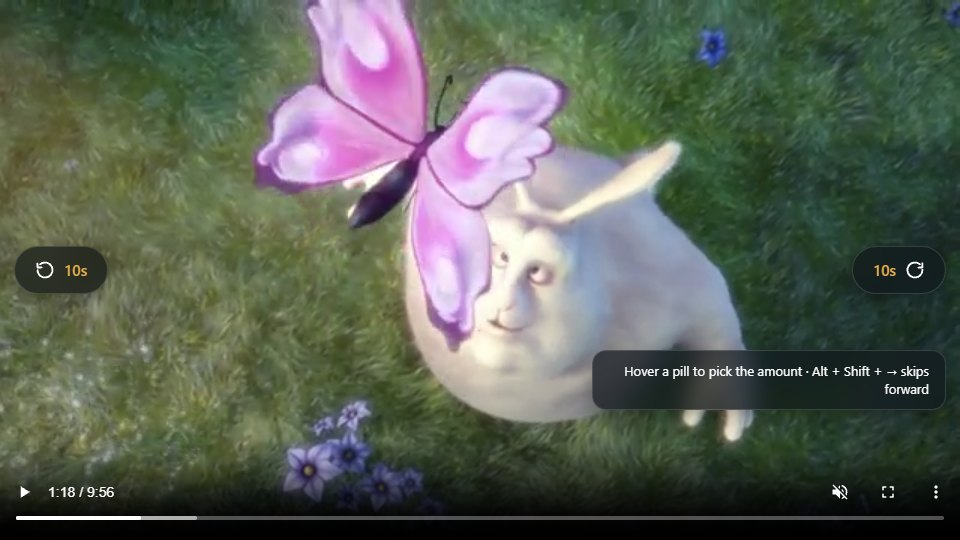
Pick the amount
- On the video: hover a control to see the amounts either side of the current one, and click one. Scrolling over the control works too.
- In the popup: the Skip tab lists your amounts. Click one to select it, or press the two big buttons to jump from there.
- Type your own: in the box under the amounts.
45is seconds;2m,1m30s,1h,1h30m30sand1:30:30all work, and1h30means 1 h 30 min. Press Enter and it joins the list. - Edit the list: Edit shows a × on each amount, and Restore default amounts (it asks first) puts the originals back.
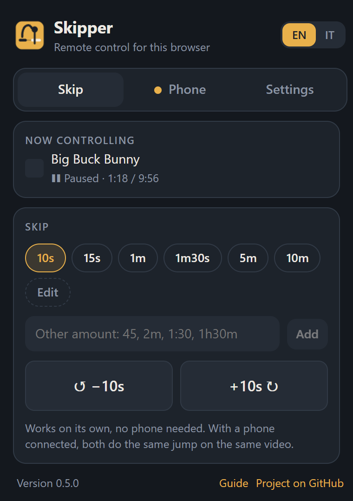
Keyboard shortcuts
Work on any page with a video, whichever style you use. They all need Alt and Shift, so a site's own keys (space, arrows, J K L, F) keep doing what they do.
| Keys | Does |
|---|---|
| Alt+Shift+← | Skip back |
| Alt+Shift+→ | Skip forward |
| Alt+Shift+↑ / ↓ | Next / previous amount |
| Alt+Shift+S | Show or hide the controls on videos |
Change any of them in Settings → Shortcuts: press Change, then the keys you want. Skipper warns you about a combination that needs Alt, Ctrl or Win to be safe while typing, one that is AltGr on many keyboards (Ctrl+Alt), one the browser keeps for itself, and one a site is known to use.
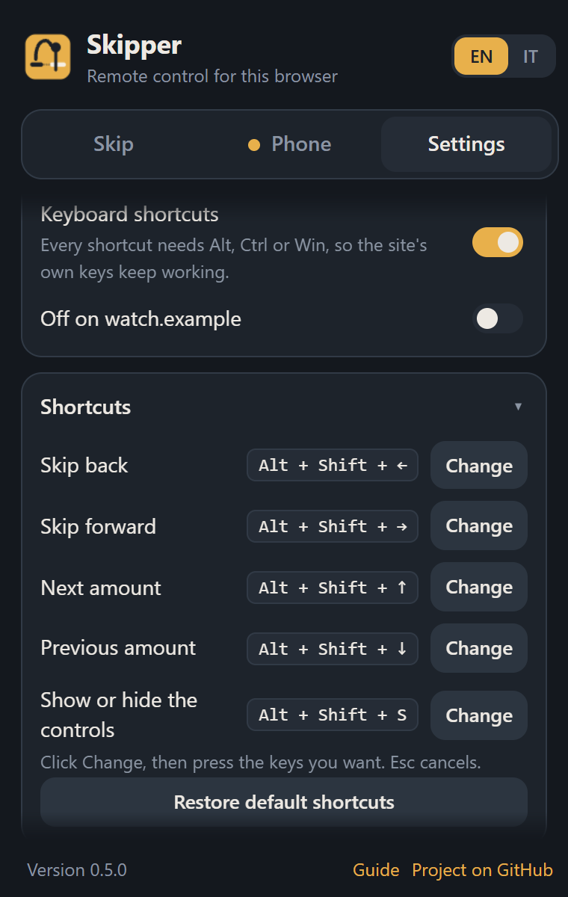
Four ways to skip
Pick the one you like in Settings → Look and control. All four do the same thing; only how you reach it differs. A new style explains itself with a short tip the first few times.
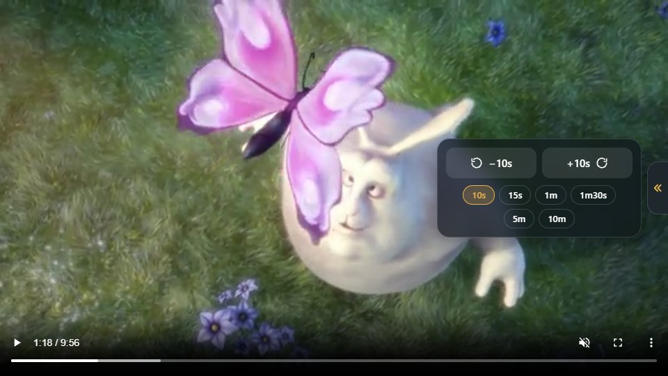
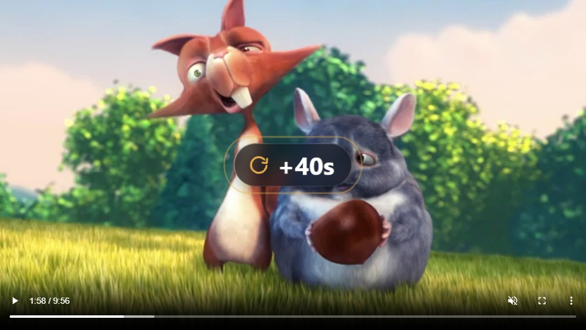
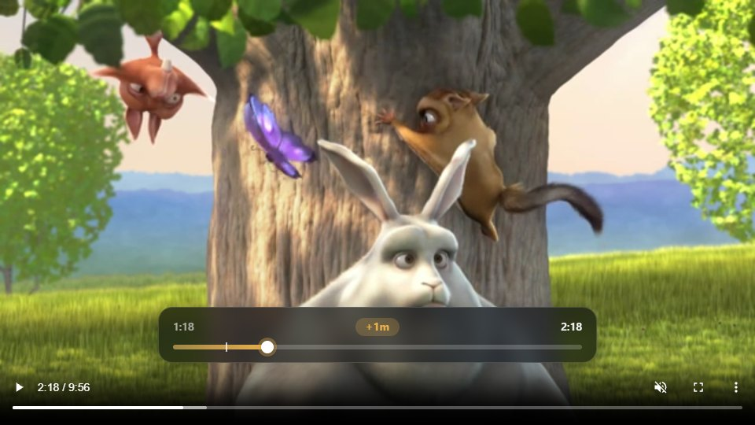
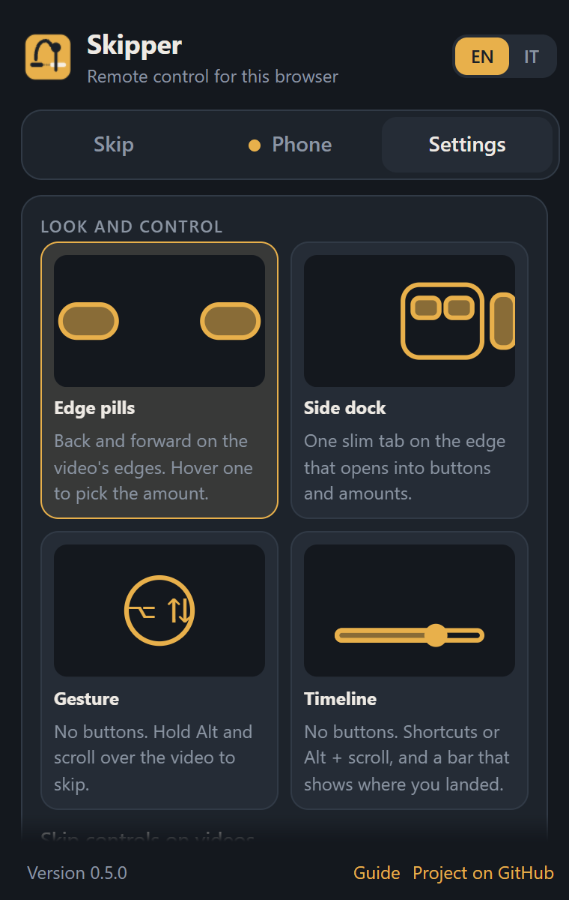
Keep it out of the way
- Off on one site: with that site's tab in front, open Settings and turn on Off on <site>. The list of sites sits right under it, for turning one back on.
- Off everywhere, shortcuts kept: turn off Skip controls on videos (or press Alt+Shift+S).
- No on-screen confirmation: turn off Confirm each jump on screen.
- No shortcuts: turn off Keyboard shortcuts.
Connect a phone optional
Pair the browser with the Skipper app and your phone becomes its remote: jump, pause and go fullscreen from the sofa. You don't need a server for this. It works as is.
-
Open the Phone tab
The pairing code is already made for you. The relay field is optional, so leave it empty: the extension then uses the public MQTT broker, which needs nothing from you.
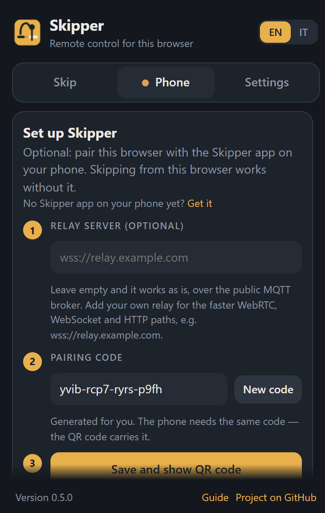
The Phone tab, before pairing -
Save and scan
Click Save and show QR code. In the Skipper app on your phone, scan the code with the camera and tap the link, or type the same pairing code on the app's welcome screen. Leave its relay field empty too.
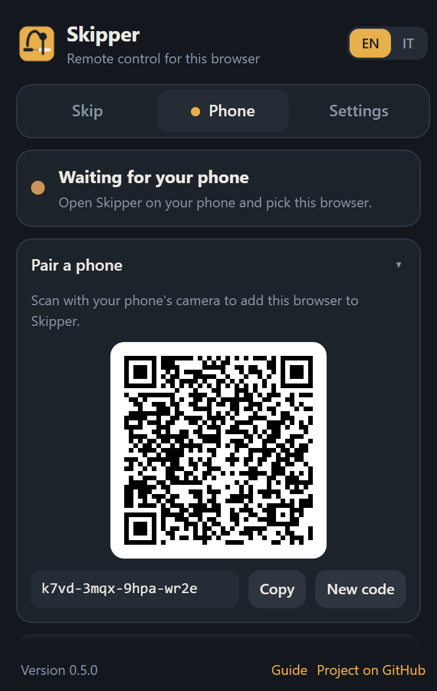
The QR code, waiting for the phone -
Check the dot
When it turns green, the phone is connected and says which path it is using. The Last command line shows what it just sent.
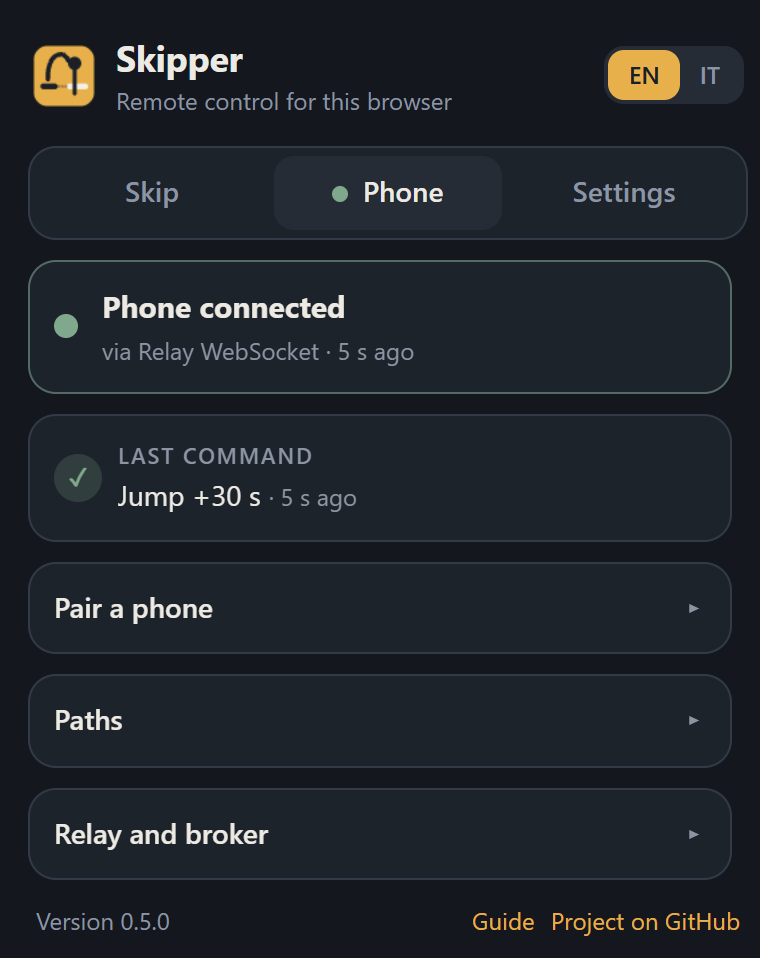
Connected
The phone and the browser can be used together: both ask for the same jump on the same video, and a jump made on the keyboard shows up on the phone's next status.
What each setting does
All of these live on the Phone tab, in the sections under the status. None needs changing to start.
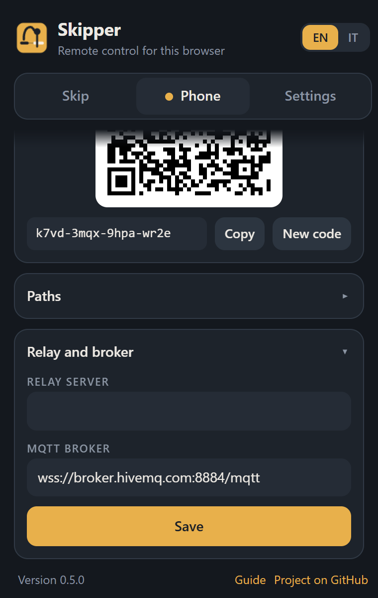
- Relay server optional
-
The address of a relay you run, such as
wss://relay.example.com. Empty is fine. With one, the phone can also reach the browser over WebRTC (peer to peer), WebSocket and HTTP, which are faster than a broker and work where one is blocked. See running the relay. - MQTT broker
-
The default is a public broker,
broker.hivemq.com, used as a mailbox between the phone and the browser. Every command is signed with a key made from your pairing code, which the broker never sees, so it cannot forge or replay a command. It can read the traffic (seek amounts, not what is on your screen), so if that matters, point this at a broker of your own. - Pairing code
- The only secret. Anyone with it can control this browser, so don't post it. New code makes another one (and unpairs the phone until it scans again). Codes made here are long enough to be safe; a short one you type yourself is flagged.
- Paths
- The connections in use, each with a switch. A path that needs a relay says so while the relay field is empty. The browser can only be reached over the internet paths, so local Wi-Fi and Bluetooth don't apply to it.
- Language
- EN | IT at the top of the popup, remembered between sessions. English is the default whatever language the browser uses.
Troubleshooting
- A shortcut does nothing
- It is ignored while you are typing in a box, on a site you switched off, and when Keyboard shortcuts is off. If another program or your keyboard layout switcher uses Alt+Shift, rebind the keys in Settings → Shortcuts.
- The controls cover part of the player
- Try the timeline or gesture style, which put nothing on the video, or switch the controls off for that site.
- Nothing shows on a video
- Controls appear when the pointer moves over a video that is at least 240×135 pixels, and not on a site you switched off. Pages that were open when you installed or updated the extension are set up automatically; reload one if it still does nothing.
- Fullscreen shows a "debugging" bar
- That is Chrome. A page only goes fullscreen when a person asks, and the only way an extension can ask for you is through the debugger, which shows that bar for a moment. It goes away by itself.
- The phone says the browser is offline
- Open the popup's Phone tab: the dot says whether a phone is heard, and the code on the phone must match the one shown there. A browser can only be reached over the internet, so the phone needs a connection too.
- The popup says an update is out
- Download the new zip, unzip it over the same folder and press Reload Skipper. Settings and pairing are kept.
The extension keeps no account and sends nothing anywhere except the connection you set up. See the privacy policy.
Screenshots show Big Buck Bunny © Blender Foundation, CC BY 3.0, peach.blender.org.